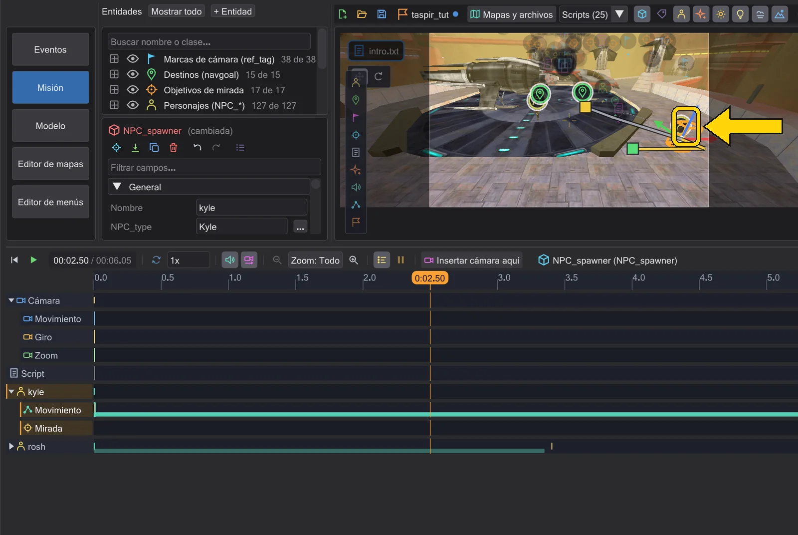

Figuras y trayectos
Las figuras caminan hasta sus navgoals y las naves vuelan sus movimientos: ves el trayecto entero y puedes cambiarlo en el mapa.

Seleccionar figuras y naves#
Pulsa una figura o una nave en la vista para seleccionar su entidad: el spawner de la figura, la entidad de brushes de la nave. El marcador y el gizmo siguen al modelo mientras se mueve, y un contorno muestra lo seleccionado. La flecha de la figura apunta adonde mira el modelo.
Inicio, final y puntos nuevos#
- Arrastra el asa final para mover el destino (el
waypoint_navgoal) o el final de un vuelo. - Arrastra el asa inicial para mover solo el inicio, no toda la línea.
- Agarra la figura en mitad de su marcha (la línea de tiempo entre el inicio y la llegada) y arrastra: se crea un punto nuevo en ese momento; para las figuras, un
ref_tagnuevo como navgoal (no cambia la red de navegación, así que la figura sigue hacia su antiguo destino como en el juego), para las naves, unmovedividido. Si una figura no encuentra camino desde un punto, una línea roja discontinua con la nota "No hay camino desde aquí hasta ..." lleva al destino que no puede alcanzar. - Rotar funciona igual: en mitad de un vuelo, los anillos crean un punto nuevo con los ángulos nuevos. Para una figura (NPC) escriben
set ( SET_DYAW )en ese momento: la figura gira con su velocidad de giro, como en el juego; para el jugador sigue siendoset ( SET_ANGLES ), que gira enseguida. Mientras camina se aplica cuando la figura llega, porque el juego gira a las figuras que caminan hacia su dirección. Si en ese momento hay activo un objetivo de mirada, la línea de estado avisa: en el juego la figura sigue mirándolo. - Tras un vuelo (en la pausa antes del siguiente o después del último), mover o girar una nave también crea una clave nueva: un
movenuevo desde el final del vuelo anterior hasta este momento. El inicio y las demás claves conservan su lugar, sus ángulos y sus tiempos. Del mismo modo, mover una figura después de su última marcha añade un navgoal nuevo (unref_tag) al que camina cuando llega; su spawner (el inicio) se queda. Mientras se reproduce la línea de tiempo no se muestra ningún gizmo. Un solo Ctrl+Z deshace un cambio de gizmo completo (un punto nuevo junto con su navgoal nuevo) y Ctrl+Y lo restaura exactamente.
Caminar o correr, destinos compartidos#
Clic derecho en el asa final de una marcha (o en su banda de la línea de tiempo) para su menú:
- Caminar (a partir de este tramo) / Correr (a partir de este tramo): escribe
SET_WALKINGoSET_RUNNINGantes del navgoal. - Mirar a esto al caminar: la figura se sigue girando hacia otra figura mientras camina (
SET_WATCHTARGET). - Caminar hacia atrás (sigue mirando hacia atrás): una marca de mirada detrás del inicio la hace caminar hacia atrás; Mirar en la dirección de la marcha lo termina.
Cuando varias figuras comparten un navgoal, moverlo las movería a todas. JK Studio lo nota y primero da a esta marcha su propia copia del destino; la línea de estado te dice cuál creó.
BOTH_WALKBACK1 o BOTH_RUNBACK1 como el juego.Cómo se mueven las figuras, como en el juego#
La vista previa mueve a los NPC con las propias reglas del juego, fotograma a fotograma: dirección, física del movimiento y trayectos. Lo que ves es lo que el juego hace con tu script:
- Velocidad. Una marcha usa la velocidad fijada cuando la figura arranca, también cuando
SET_WALKING,SET_RUNNING,SET_WALKSPEEDoSET_RUNSPEEDvienen justo después deSET_NAVGOAL. Una velocidad nueva durante la marcha cambia el resto del camino. Sin velocidad en el script valen los valores del archivo .npc. - Parar.
SET_NAVGOALconNULLdetiene la figura donde está; undowaitsobre la marcha continúa. Un navgoal nuevo durante una marcha empieza desde donde está la figura. - Girar. Los NPC giran con su velocidad de giro: 60 + 3 ×
SET_YAWSPEEDgrados por segundo (330 con el yawSpeed habitual de 90).SET_DYAW,SET_VIEWTARGETySET_WATCHTARGETgiran suavemente,SET_ANGLESgira enseguida.rotateymoveno hacen nada en un NPC, en el juego tampoco. La dificultad y las reglas del juego cambian la velocidad de algunas clases (Preferencias). - Gravedad. Las figuras están sobre el suelo del mapa, caen, suben escalones, se pegan a las pendientes y van en ascensores, con la
gravitydel mapa ySET_GRAVITY. Una puerta, un ascensor o un tren al que estorba una figura se detiene como en el juego: una puerta da la vuelta (una trituradora sigue apretando), un tren espera, y la figura recibe el daño de la puerta o del tren (dmg, 2 por defecto); una figura en un ascensor que la aplastaría contra algo se queda atrás si tiene sitio, si no, retiene el ascensor (no para brushes movidos por un script). Una figura que aparece al cargar el mapa todavía está cayendo cuando empieza la cinemática, como en el juego.DROPTOFLOORno cambia nada en un jugador. - Figuras del mapa. Cada personaje que aparece al cargar el mapa (una entidad
NPC_*sintargetname) está en la vista previa, también cuando ningún script lo nombra; como el droide junto a Anakin en md_am_sith. Una pestaña de script deja fuera a los actores de otras cinemáticas: una figura conNPC_targetnamey el spawnflag CINEMATIC no hace nada por sí sola en el juego, así que solo aparece en las pestañas cuyos scripts la usan (en md_am_sith los créditos muestran a Anakinani4, no deani1aani5de las otras escenas). Una pestaña vacía muestra el mapa tal como se carga, con cada figura. Las clases comoNPC_Droid_R2D2,NPC_KyleoNPC_Stormtroopereligen su tipo de personaje ellas mismas, como en el juego; donde el juego elige al azar (NPC_Stormtroopersin spawnflags, los spawners aleatorios de Movie Duels), la vista previa muestra la primera opción. - Trayectos. Una figura camina en línea recta hacia su destino solo donde lo haría el juego: cerca (menos de 110 unidades), entre waypoints vecinos (menos de 500) o con la línea libre (menos de 400). Si no, camina por la red de waypoints, punto a punto; conecta tus destinos con waypoints (Waypoints de NPC). En las esquinas, una marcha aparece como varios trozos del mismo comando.
- Sin camino. Si la red no tiene camino, la figura se queda quieta y un
dowaitsobre la marcha nunca termina; en el juego también. La lista de estado nombra la figura y el destino. - Puertas. Las puertas y otros brushes móviles están donde los tiene el juego en ese momento. Un NPC espera ante una puerta cerrada y sigue cuando se abre. Una puerta bloqueada (o una que solo puede abrir el jugador) corta el camino mientras está cerrada. Las paredes y puertas que mueve un script (
move,rotate) o que quita están donde las tiene el script. Una figura de pie sobre un ascensor o una plataforma que se mueve viaja con ella, también mientras camina, como el juego. - Bordes, curvas y otros NPC. Los NPC caen de los bordes y aterrizan, con la animación en el aire del juego en una caída larga y su animación de aterrizaje donde el juego reproduce una (un aterrizaje duro los frena), también cuando una figura apareció en el aire; una animación de script en la parte superior del cuerpo que empezó antes de un salto no vuelve después, como en el juego; las superficies curvas (patches) los bloquean como paredes. No se atraviesan: si dos NPC se encuentran, la vista previa muestra cómo los deja pasar el juego, y los tiempos de
dowaitlo siguen. Como en el juego, una figura hecha invisible (SET_INVISIBLE true) o no sólida (SET_SOLID false) no bloquea a nadie, las figuras que están en el mapa sin script sí, y una figura muerta estorba hasta convertirse en cadáver (5 s en Movie Duels, 0,5 s en OpenJK; un Mark1 o un Interrogator nunca). Una figura que vuelve a ser sólida (SET_SOLID true) mientras está dentro de otra solo se vuelve sólida cuando queda libre: undowaitsobre esesetespera tanto como en el juego.SET_ORIGINySET_ANGLEScontag( "nombre", ORIGIN )oANGLESponen la figura en el ref_tag o navgoal de ese nombre; sin ese tag el comando no hace nada, como el juego. Un script ejecutado por una entidad (un ejecutor de scripts, un trigger, un NPC spawner) lee las clavesparm1...parm16de esa entidad conget( STRING, "SET_PARM1" ), y dentro de un bloqueaffectgetlee los parms de la entidad afectada; asíaffect ( $get( STRING, "SET_PARM1" )$ )ymove ( $tag( get( STRING, "SET_PARM1" ), ORIGIN )$, ... )mueven la entidad nombrada ahí al tag nombrado ahí, como el juego;movetambién aceptatag( "nombre", ORIGIN )como destino. Los NPC que conocen el salto de Fuerza (FP_LEVITATION en su .npc) saltan como en el juego: por los bordes de salto de la red de waypoints (targetJump) y hacia su objetivo tras estar bloqueados 2 segundos; la vista previa reproduce las animaciones del juego: la animación de salto (al dejar el suelo, las piernas pasan a la pose de salto mientras la parte superior la termina; una voltereta sigue siendo de cuerpo entero) y la animación de aterrizaje, también tras un saltoBS_JUMPque solo aterriza después deBS_DEFAULT. TrasSET_NO_ACROBATICS trueun NPC nunca salta (sigue tomando bordes de salto y se para en ellos, como en el juego). En el estado de comportamientoBS_JUMPun NPC se gira hacia su navgoal, se agacha, salta hasta allí en un arco y aterriza, como en el juego; undowaitsobre el navgoal termina tras la animación de aterrizaje una vez alcanzado el objetivo (si se queda corto, vuelve a saltar). El arco es el del juego: se queda corto ante un navgoal por encima del NPC y se pasa en uno por debajo, y un navgoal que cuelga en el aire es solo el punto al que apunta. - Zonas mortales. Una figura que camina o cae en un
trigger_hurtrecibe su daño como en el juego (dmg,delay,wait, los spawnflags; unuseactiva o desactiva la zona) y muere cuando se le acaba la salud: reproduce su muerte, se queda donde cayó y se ejecuta sudeathscript. La salud es la que le da el juego (la clavehealth, si no el archivo .npc y la dificultad),SET_HEALTHla cambia, la armadura (SET_ARMOR, la propia del droide asesino y del droideka) se lleva su parte como la armadura del juego (no en una caída), un rancor recibe como máximo 10 por golpe,SET_INVINCIBLE truelo protege, y conSET_UNDYING trueconserva 1 de salud y sudeathscriptvuelve a ejecutarse con cada golpe que lo mataría. Las minas láser que explotan hieren a las figuras del mismo modo. El jugador no sufre daño en la vista previa. - Cambio de nivel. Cuando un script usa un
target_level_change(directamente o a través de un relé), el juego carga el mapa siguiente tras ese fotograma. La vista previa termina ahí también: la línea de tiempo, la cámara y las figuras se paran en ese momento y no ocurre nada de lo que el script haría después. La lista de estado nombra el momento y el mapa siguiente. Un nombre de mapa que empieza por+(OpenJK y Movie Duels, por ejemplo+saberMenuo+creditsingame) no carga ningún mapa: el juego abre ese menú y se pausa hasta que el jugador lo cierra, así que la vista previa sigue y la lista de estado nombra el menú. - Misión fracasada.
SET_MISSIONFAILEDhace morir al jugador y muestra la pantalla de misión fracasada del juego. El juego detiene entonces cada script en cuanto no hay ninguna cámara en marcha (justo tras ese fotograma, o tras elcamera ( DISABLE )de la cinemática); el mundo sigue. La vista previa hace lo mismo: los comandos de script tras ese momento no ocurren, las figuras que ya caminan terminan su marcha, el jugador reproduce su animación de culpa y la lista de estado nombra ambos momentos. - Poses de arma. Un NPC con un arma de fuego en la mano (no un sable láser) la sostiene con la parte superior del cuerpo como en el juego siempre que no se reproduzca ahí ninguna animación de script: con OpenJK y Jedi Outcast, un rifle preparado mientras está de pie y camina (
TORSO_WEAPONIDLE3), una pistola delante mientras está de pie, y los brazos se balancean con las piernas mientras corre; con Movie Duels, un rifle bajado (TORSO_WEAPONREST3) o llevado trasSET_WALKING true(TORSO_WEAPONIDLE3). Una animación de script en la parte superior o en todo el cuerpo gana mientras corre su temporizador. - BS_NOCLIP. Con
SET_BEHAVIOR_STATE BS_NOCLIPuna figura vuela en línea recta a través de las paredes hasta su objetivo, con la velocidad que tenga en ese momento. FijaSET_WALKSPEEDoSET_RUNSPEEDtrasBS_NOCLIP; si no, una figura que aún no ha caminado no se mueve (y undowaitse queda colgado). - OpenJK o Movie Duels. Con las reglas de OpenJK los NPC corrigen el rumbo y giran cada 100 ms (los usuarios de sable de mayor rango, a partir de Caballero jedi, cada 50 ms): por eso girar tarda aproximadamente el doble que con Movie Duels, donde ambas cosas ocurren cada 50 ms, y las velocidades de giro por dificultad son distintas, así que una marcha puede terminar un poco distinta. Las misiones de Jedi Outcast siguen el mismo ritmo de 100 ms que OpenJK, también cuando un NPC gira en el sitio. Elige las reglas en Preferencias.
Sables láser: paredes y choques#
Los sables láser se comportan como en el juego. Una hoja que entra en una pared, en el suelo o en una puerta se acorta hasta la superficie y vuelve a crecer; saltan chispas y suena mientras toca, y donde se desliza por la pared quema una marca que brilla un momento y se desvanece a los diez segundos. En el agua hierve. Los sables cuyo archivo .sab dice noIdleEffect se quedan en silencio mientras la figura solo está de pie. Solo las figuras que ve la cámara hacen chispas, marcas y sonidos: el juego también solo procesa lo que está en la vista de la cámara. Saltar en la línea de tiempo muestra lo mismo que reproducir, y arrastrar el cabezal hacia atrás es tan fluido como hacia delante: lo calculado una vez se queda en memoria (hasta diez minutos de una escena).
Las hojas de dos figuras solo chocan donde lo permite el juego. Movie Duels: los dos NPC deben estar en BS_CINEMATIC (set ( SET_BEHAVIOR_STATE, BS_CINEMATIC ), o un spawner con el spawnflag CINEMATIC), y el atacante necesita set ( SET_SABERCOLLISIONS, true ); false lo vuelve a desactivar. OpenJK no tiene SET_SABERCOLLISIONS: ahí las hojas solo chocan en las animaciones BOTH_CIN_16 y BOTH_CIN_17 de figuras en BS_CINEMATIC (Movie Duels también permite estas dos). Un golpe reproduce la chispa de bloqueo, uno de los sonidos de choque de ese juego y el destello del choque. Los combates que la IA libraría por su cuenta (SET_ENEMY, BS_DEFAULT) no se simulan: solo lo que anima el script. En Movie Duels el estilo de sable rápido también enciende la hoja el doble de rápido. Las reglas se eligen en Preferencias.